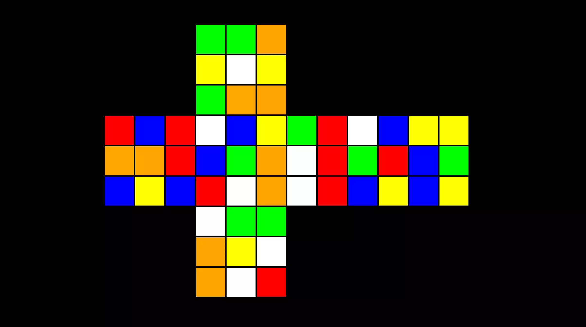

Computer Science, Mathematics and Statistics student at UNSW in Sydney.
Active in full stack web development and native mobile app development.
Interested in algorithms, theoretical computer science and pure maths.
Collaborative Projects
- Centralised source of events across Australian universities including UNSW, USyd and UniMelb.
- Helps students discover new societies and consequently allows societies to gain exposure.
- Actively working with UNSW societies to better support student academic and social life.
- Development team consists of UNSW Computer Science and Software Engineering students.
Personal Projects
CubeSim
Rubiks Cube Simulater and Solver
Repository- Renders a two-dimensional Rubik's cube that can be controlled by the user with keyboard controls.
- Generates solutions for any given state of the cube specified using the standard beginner's method.
- Built in Python with Pygame for visuals and controls.
Huffman Encoding
Huffman Encoding Visualisation Tool
Live DemoRepository- Generates and renders a binary Huffman tree based on the user input of symbol probabilities in a given text.
- Draws the traceback encoding path for a certain symbol when a specific symbol is selected by the user.
- Built in Javascript with HTML5 Canvas for visuals.
Personal Projects
Full Stack Starter
Web Development Workflow Automator
Repository- Generates and renders a binary Huffman tree based on the user input of symbol probabilities in a given text.
- Draws the traceback encoding path for a certain symbol when a specific symbol is selected by the user.
- Built in Javascript with HTML5 Canvas for visuals.
Reusable Components
Generic Cross Project React Components
Repository- A set of common and simple generic React components designed to be easily reused across different projects.
- Speeds up user interface development by modifying existing components rather than rewriting from scratch.
- Written in Typescript with React-Bootstrap for styling.
Personal Projects
Web Development Skillset
Frontend
- Languages: Javascript, Typescript, HTML, CSS.
- Frameworks/Libraries: React, Bootstrap, Canvas.
- Other: accessible, performant and responsive design.
Backend
- Languages: Python, Javascript, Typescript, SQL.
- Frameworks/Libraries: Flask, Express.js, SocketIO.
- Other: MongoDB, Heroku, Amazon Web Services.
Other Skillset
Languages
- C: low level access for high performance programs.
- Haskell: mathematically based functional programming.
- R: statistical computing for data science and analysis.
Software Engineering Tools
- Git: version control system for tracking code changes.
- Pytest: unit testing framework for Python programs.
- Hypothesis: property based testing library for Python.
Personal Projects
COMP3821
Extended Algorithms and Programming Techniques
Repository- Python implementation of common algorithms.
- Utilises techniques from various programming paradigmssuch as brute force, divide and conquer, greedy method, linear and dynamic programming.
- Documents my studies in common algorithms from within the fields of Computer Science and Mathematics.
LeetCode
Competitive Programming
LeetCode ProfileRepository- Python solutions to various LeetCode problems.
- Includes a wide variety of problems involving common algorithms and manipulation of common data structures such as arrays, hashmaps, graphs, trees and heaps.
- Documents my practice in problem solving and ability to write and explain code in easy and simple language.
Extracurriculars
- Help organise Rubik's Cube tutorials and unofficial competitions at UNSW in Sydney.
- Encourage students to find an interest and hobby in Rubik's Cubes and speedsolving.
- Help existing speedcubers to improve and optimise their solves by hosting workshops.
- Currently working with the World Cube Association to organise official competitions.

- Actively participated in speedcubing competitions across Australia since 2014.
- Held numerous Sydney and Australian national championship podium titles.
- Held a former top 10 world ranking in one handed 3x3 Rubik's Cube solving.
- Developed video resources to teach viewers solving techniques and how to improve.